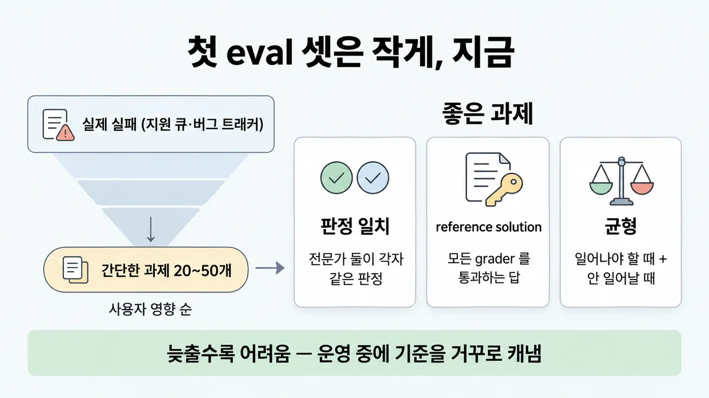
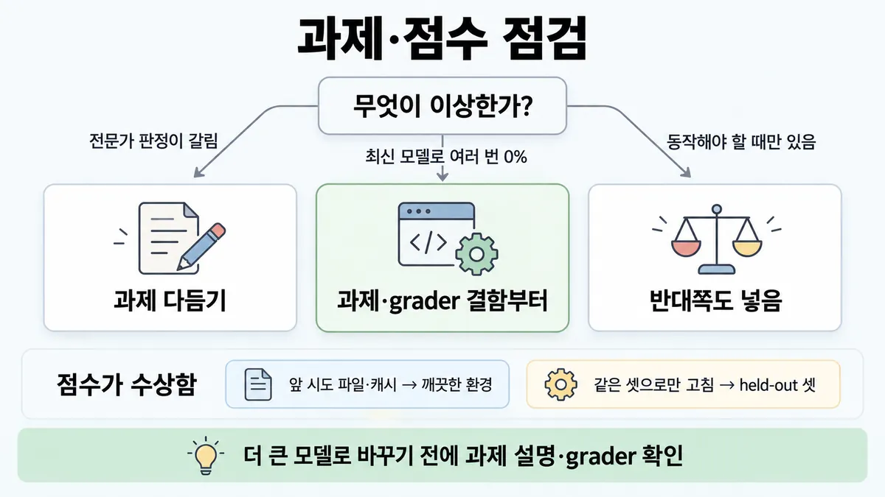

■ 첫 eval 셋 만들기
표시가 없는 문장은 공식 문서에서 확인한 내용이에요. 다른 표시는 읽는 법
왜 배우나 — 시험이 요구하는 것
시험 목표 4.2 평가 데이터·테스트 설계 · D4 평가 16%Design evaluation datasets and test frameworks using mixed methodologies
이 개념으로 푸는 판단 (할 수 있어야 하는 것)
- 4.2② eval 셋, 수백 개가 모일 때까지 기다릴까? — 첫 평가 데이터셋 만들기 (크기·출처·균형·과제 품질)
- 4.6② 출시 뒤 품질이 조용히 떨어진다 — 무엇을 돌리나? — 운영 신호를 eval 로 되먹이는 루프
- 6.3② 월간 검토에서 법무팀이 놓친 조항 사례를 들고 왔다 — 이 피드백을 어디로 보내나? — 피드백 루프를 닫는 방법 (상태 보고 회의 vs 평가셋 편입)
- 6.5① 핸드오프가 끝났다 — 아키텍트가 계속 할 일 두 가지는? (복수 응답) — 수명주기 5단계(디스커버리·설계·핸드오프·모니터링·반복)는 되돌아오는 루프 — 핸드오프 뒤 할 일
한눈에
eval 셋 = 과제(task) 모음. 과제 = 정해진 입력 + 성공 기준(success criteria) 하나. 수백 개를 기다리지 말고 실제 실패에서 뽑은 간단한 과제 20~50개로 바로 시작
좋은 과제 = 전문가 둘이 각자 같은 통과/실패 판정 · 모든 grader(채점기)를 통과하는 reference solution 이 있음 · 동작이 일어나야 할 때와 안 일어나야 할 때가 둘 다 들어 있음
비유 포스트모템 액션 = 그 장애를 재현하는 regression(회귀) 테스트 추가. 커버리지를 다 갖출 때까지 CI 를 미루지 않음


ELI5
받아쓰기 연습 문제집을 처음 만드는 거예요.
- 백 문제가 모일 때까지 기다리면 연습을 영영 못 해요.
- 지난주에 틀린 단어 스무 개로 오늘 바로 시작해요.
- 문제마다 정답을 먼저 적어 두면, 문제가 이상한지 바로 알아요.
- 받침 있는 단어만 넣으면 받침만 잘하는 아이가 돼요. 없는 단어도 섞어요.
개념 설명
원리
왜 작게 시작해도 되나
- 초기 에이전트는 한 번 고치면 결과가 크게 바뀜(효과가 큼) → 작은 표본으로도 차이가 보임. 리서치 글 예 : 프롬프트 한 번에 30% → 80%.
- 늦출수록 비쌈. 초기엔 제품 요구가 그대로 과제가 되지만, 늦으면 돌아가는 시스템에서 성공 기준(success criteria)을 거꾸로 캐내야 함.
과제는 어디서
- 출시 전 : 개발 중 손으로 하던 확인 · 릴리스 전 확인 · 사용자가 흔히 할 과제.
- 운영 중 : 버그 트래커·지원 큐의 사용자 보고 실패 → 사용자 영향 순. 이러면 셋이 실제 사용을 닮음.
- 생성도 됨(Claude 로 생성 · Skilljar 는 Haiku 권함) — 단 실사용에서 영감 받은 · 실제 데이터 기반.
과제 품질이 곧 지표 품질
- 모호한 과제는 지표에 잡음으로 들어감. 기준 = 전문가 둘이 각자 같은 판정을 내리나.
- reference solution = 모든 grader(채점기)를 통과하는 알려진 답. "풀 수 있다"와 "grader 가 맞게 설정됐다"를 한 번에 증명.
- 최신 모델이 여러 번 해도 0% 면 에이전트보다 과제·grader 를 먼저 의심.
균형 · 격리
- 한쪽만 테스트하면 그쪽으로만 최적화됨(검색해야 할 때만 → 뭐든 검색). 과소 발동·과잉 발동을 둘 다 측정.
- 시도끼리 환경을 공유하면 실패가 서로 엮이고(인프라 탓) 점수가 부풀 수 있음(앞 시도의 흔적을 봄).
핵심 질문 두 개
- 지금 가진 실제 실패로 오늘 시작할 수 있나?
- 이 과제가 0% 라면, 에이전트 탓인지 과제 탓인지 가를 수 있나(reference solution · 전문가 둘)?
규칙과 판단


갈림길
①② 언제 · 어디서 [4.2②]
지금 시작
실제 실패에서 뽑은 간단한 과제 20~50개면 좋은 출발
사용자 영향 순
사용자 보고 실패를 과제로, 사용자 영향 순
실사용 기반으로 바꿈
실사용을 본뜬 · 실제 데이터 기반
③④ 과제 점검 [4.2②]
과제 다듬기
모호한 과제 = 지표의 잡음
과제·grader 결함
모델을 바꾸기 전에 과제 설명·grader 부터 확인
반대쪽도 넣음
동작이 일어나야 할 때 + 안 일어나야 할 때 둘 다
⑤⑥ 점수가 수상함 [4.2②]
깨끗한 환경
시도마다 깨끗한 환경에서 시작
held-out 셋
held-out test set 으로 과적합 확인
분포 · 엣지
실제 과제 분포를 닮게 + 엣지 케이스(관련 없거나 없는 입력 · 너무 긴 입력 · 해로운 입력 · 사람도 합의 어려운 모호한 입력)
여러 번 시도
결과가 매번 달라 여러 trial
흐름
그림 속 이름·금액·시간·토큰 수는 예시예요. 공식 한도·동작은 카드 본문 값이 기준.
장면 글로 보기
칸 : 지원 큐 → eval 셋 → 에이전트 → grader
규칙 (eval 셋) : 과제 = 정해진 입력 + 성공 기준 하나
질문 : 과제는 어디서 가져올까?
① 실제 실패로 시작 ✓
- 시작 : 지원 큐 — 쪽지 : #4821 교환이 환불로 처리 / #4907 배송지 변경 안 됨 / … 실패 37건
- 뽑기 : 지원 큐 → eval 셋 : 실제 실패 → 과제 20~50개 — 쪽지 : 과제 30개 · 영향 순 / 01 입력 : 교환 신청 / 기준 : 상태 = "교환"
- 돌리기 : eval 셋 → 에이전트 : 과제마다 돌림 — 쪽지 : 01 입력 / "셔츠 교환하고 싶어요"
- 채점 : 에이전트 → grader : reference solution 도 통과 — 쪽지 : 01 : 통과 / reference solution : 통과
- 끝 : 수백 개를 기다리지 말고 20~50개로 바로 시작
② 한쪽만 넣음 ≠
- 시작 : 지원 큐 — 쪽지 : "배송 어디쯤?" (검색 필요) / "영업시간 몇 시?" (아는 답)
- 뽑기 : 지원 큐 → eval 셋 : 검색해야 할 때만 — 쪽지 : 과제 30개 / 전부 "검색해야 함"
- 돌리기 : eval 셋 → 에이전트 : 한쪽만 = 한쪽 최적화 — 쪽지 : "영업시간?" 에도 / 주문 검색 도구 호출
- 끝 : 검색해야 할 때만 넣으면 거의 다 검색하는 에이전트 — 안 해야 할 때도 넣음
③ 여러 번 0% ≠
- 시작 : eval 셋 — 쪽지 : 17 설명 : "반품 라벨을 저장해" / (저장 경로는 안 적음)
- 돌리기 : eval 셋 → 에이전트 : 최신 모델로 100번 — 쪽지 : 저장 : ./label.pdf
- 채점 : 에이전트 → grader : 여러 번 0% — 쪽지 : 기대 : /out/label.pdf / 100번 중 0번 통과
- 표시 : grader : 대개 과제·grader 결함 — 쪽지 : 설명에 없는 경로를 / grader 가 가정함
- 끝 : 모델을 바꾸기 전에 과제 설명·grader 부터 확인
규칙 원문 ①②③④⑤⑥ (갈림길로 그린 규칙)
-
일찍 · 작게 : 실제 실패에서 뽑은 간단한 과제 20~50개면 좋은 출발 [4.2②]
초기엔 변경마다 효과가 커서 작은 표본으로 충분. 성숙한 에이전트는 작은 효과를 잡으려 더 크고 어려운 eval 이 필요할 수 있음
늦출수록 만들기 어려움 — 오래 기다리면 운영(production) 중인 시스템에서 성공 기준을 거꾸로 캐냄 · 리서치 글도 실사용을 대표하는 약 20개 질의로 시작
-
출처 : 개발 중 손으로 하던 확인 · 릴리스 전 확인 · 사용자가 흔히 하는 과제부터. 운영 중이면 버그 트래커·지원 큐 → 사용자 보고 실패를 과제로, 사용자 영향 순 [4.2②]
실사용을 본뜬 · 실제 데이터 기반. 너무 단순한 sandbox 는 피함 · 과제를 Claude 로 생성해도 됨(손으로 또는 Claude 로 · 생성엔 Haiku 같은 빠른 모델) (Skilljar)
운영 실패를 계속 넣는 고리는 ■ 운영 → eval feedback loop
-
과제 품질 : 전문가 둘이 각자 같은 통과/실패 판정 = 좋은 과제. 모호한 과제 = 지표의 잡음 [4.2②]
grader 가 확인하는 건 전부 과제 설명에 있어야 함 (예 : 파일 경로를 안 적었는데 테스트가 특정 경로를 가정 → 에이전트 탓 아닌 실패)
과제마다 reference solution = 모든 grader 를 통과하는 알려진 답 → 풀 수 있는 과제이고 grader 설정이 맞다는 증거
최신 모델로 여러 번 0%(pass@100 0%) = 대개 과제·grader 결함. 모델을 바꾸기 전에 과제 설명·grader 부터 확인
-
균형 : 동작이 일어나야 할 때 + 안 일어나야 할 때 둘 다. 한쪽만 = 한쪽 최적화 [4.2②]
예 : 검색해야 할 때만 테스트 → 거의 다 검색하는 에이전트. 날씨는 검색 · "Apple 창업자"는 아는 걸로 답 — 둘 다 넣음 · 클래스 불균형 eval 은 피함
-
분포 · 엣지 : 실제 과제 분포를 닮게 + 엣지 케이스(관련 없거나 없는 입력 · 너무 긴 입력 · 해로운 입력 · 사람도 합의 어려운 모호한 입력) [4.2②]
개선에 쓴 셋과 따로 held-out test set 으로 과적합 확인
-
하네스 : 시도마다 깨끗한 환경에서 시작. 남은 파일·캐시·자원 고갈 같은 공유 상태 = 서로 엮인 실패(시도끼리 같이 실패함) · 부풀린 점수 (예 : 앞 시도의 git 기록을 봄) [4.2②]
결과가 매번 달라 여러 trial → ◆ pass@k vs pass^k · 쉬워진 셋의 졸업은 ◆ capability eval vs regression eval
Console 옛 Workbench 의 저장 eval 은 2026-08-17 종료 시험 뒤 변경 시험은 옛 화면을 물을 수도
더 깊이 : 판단 규칙 · 상황 변수 (설명)
판단 규칙
| 조건 | 답 | 근거 |
|---|---|---|
| eval 을 언제 시작 | 지금, 실제 실패에서 뽑은 간단한 과제 20~50개 | demystifying-evals "20-50 simple tasks drawn from real failures is a great start" |
| 운영(production) 중 과제 출처 | 버그 트래커·지원 큐의 사용자 보고 실패, 사용자 영향 순 | demystifying-evals |
| 과제가 좋은지 | 전문가 둘이 각자 같은 통과/실패 판정 | demystifying-evals |
| 과제마다 | 모든 grader 를 통과하는 reference solution | demystifying-evals |
| 최신 모델로 여러 번 0% | 과제 설명·grader 부터 확인 | demystifying-evals "most often a signal of a broken task" |
| 동작을 테스트 | 일어나야 할 때 + 안 일어나야 할 때 | demystifying-evals |
| 셋 구성 | 실제 과제 분포 + 엣지 케이스 | develop-tests · en-full |
| 개선을 반복함 | held-out test set 으로 과적합 확인 | writing-tools-for-agents |
| 시도 설계 | 시도마다 깨끗한 환경 · 여러 trial | demystifying-evals |
상황 변수
| 변수 | 값 | 답 쪽 | 근거 |
|---|---|---|---|
| 단계 | 출시 전(실제 실패 없음) | 수동 확인·릴리스 전 확인·요구사항 → 과제 · 생성도 됨 | demystifying-evals · writing-tools-for-agents |
| 단계 | 운영 중 | 버그 트래커·지원 큐, 사용자 영향 순 | demystifying-evals |
| 성숙도 | 초기(효과 큼) | 20~50개로 충분 | demystifying-evals |
| 성숙도 | 성숙(효과 작음) | 더 크고 어려운 eval | demystifying-evals — 몇 개인지는 뒤집히는 때 1 |
| 판정 | 전문가끼리 갈림 | 과제 다듬기 | demystifying-evals |
| 통과율 | 최신 모델로 여러 번 0% | 과제·grader 고장 의심 | demystifying-evals |
| 통과율 | 과제·grader 확인 뒤에도 낮음 | capability(능력) eval 로 둠(낮게 시작이 정상) | demystifying-evals → ◆ capability eval vs regression eval |
| 테스트 방향 | 한쪽만 | 반대쪽 추가 | demystifying-evals |
| 환경 | 시도끼리 공유 | 격리 | demystifying-evals |
| 생성 방식 | Claude 로 합성 | 됨, 실사용 기반이면 | writing-tools-for-agents · Skilljar 287739 |
연습 문제
고객지원 Agent 의 첫 eval 셋 30개를 지원 큐의 실제 실패에서 뽑았다. 그중 과제 하나가 최신 모델로 100번 돌려도 한 번도 통과하지 못한다여러 번 0%. 팀원은 더 큰 모델로 바꾸자고 한다. 먼저 할 일은?
시험 대비
함정
- "대표성을 위해 수백 개가 모인 뒤 시작" → 20~50개로 바로
- "합성 문항 500개가 모일 때까지 eval 을 미룸" → 미루는 게 틀림. 생성 자체는 됨, 실사용 기반으로
- 쓰기 쉬운 케이스부터 → 사용자 보고 실패를 사용자 영향 순
- 여러 번 0% 가 나오자 더 큰 모델로 교체 → 대개 과제·grader 결함
- 검색해야 할 때만 테스트 → 거의 다 검색하는 에이전트
- 시도끼리 환경을 이어 씀 → 서로 엮인 실패 · 부풀린 점수
- "'golden data set' 이 공식 용어" → 공식은 reference solution (단 코드 변수
golden_answer는 공식 문서에 있음)
신호
"In reality, 20-50 simple tasks drawn from real failures is a great start."
"Converting user-reported failures into test cases ensures your suite reflects actual usage; prioritizing by user impact helps you invest effort where it counts."
"A good task is one where two domain experts would independently reach the same pass/fail verdict."
"For each task, it’s useful to create a reference solution: a known working output that passes all graders."
"With frontier models, a 0% pass rate across many trials (i.e. 0% pass@100) is most often a signal of a broken task, not an incapable agent"
"Test both the cases where a behavior should occur and where it shouldn't. One-sided evals create one-sided optimization."
"Each trial should be “isolated” by starting from a clean environment."
더 깊이 : 뒤집히는 때 · 오답 재료 (설명)
뒤집히는 때
1. 20~50개로는 모자란 때
- 조건 : 성숙한 에이전트. 이번 변경의 기대 효과가 통과율 +2%p.
- 계산 : 과제 30개면 과제 1개 = 3.3%p → +2%p 는 과제 하나도 안 바뀔 크기라 셋이 변화를 못 봄. 초기처럼 30% → 80% 면 30개 중 15개가 바뀜 → 30개로 충분.
- 전제 : 과제마다 통과·실패 이진 · 시도 간 흔들림은 뺌.
- 등급 : 계산. 공식은 "성숙하면 더 크고 어려운 eval 이 필요할 수 있다"까지만(몇 개인지 숫자 없음).
- 근거 : demystifying-evals · multi-agent-research-system
2. 실제 실패가 아직 없는 때
- 조건 : 출시 전 고객지원 Agent. 지원 큐가 비어 있음.
- 판단 : 실패 대신 제품 요구·수동 확인·흔한 과제에서 뽑음. Claude 로 수십 쌍 생성도 공식 권장(실사용에서 영감 · 실제 데이터 기반). "합성 500개가 모일 때까지 미룸"이 틀린 건 합성 때문이 아니라 미루기 때문.
- 근거 : demystifying-evals · writing-tools-for-agents
3. 0% 가 정말 모델 탓인 때
- 조건 : 여러 번 0%. 그런데 reference solution 은 모든 grader 를 통과하고, transcript 를 읽어 보니 에이전트가 진짜로 틀림.
- 판단 : 공식 문장은 "대개(most often)" 과제 고장 — 늘 그렇다는 게 아님. 과제·grader 가 멀쩡하면 그 과제는 capability eval 의 오를 언덕(통과율을 올려 갈 여지 — 낮은 통과율에서 시작이 정상).
- 등급 : (문장) · 추론 (순서 : reference solution → transcript → capability 판단)
- 근거 : demystifying-evals
4. 과제 수가 적어도 trial 은 여러 번
- 조건 : 과제 25개, 1회 성공률 70% 인 과제가 섞임.
- 계산 : 한 번만 돌리면 그 과제는 70% 확률로 통과 → 한 번 결과로 "고쳤다/깨졌다"를 가르기 어려움. 여러 trial 로 통과 비율을 봄.
- 등급 : (여러 trial) · 계산 (예시 숫자)
- 근거 : demystifying-evals → ◆ pass@k vs pass^k
오답 재료
| 오답 | 왜 끌리나 | 왜 틀리나 | 근거 |
|---|---|---|---|
| "대표성을 위해 수백 개가 모인 뒤 시작" | 표본이 크면 믿을 만해 보임 | 20~50개로 바로. 늦출수록 만들기 어려움 | demystifying-evals |
| "합성 문항 500개를 만들 때까지 eval 을 미룸" | 합성은 빨리 늘릴 수 있음 | 미루기가 틀림. 생성은 되지만 실사용 기반으로, 지금 가진 걸로 시작 | demystifying-evals · writing-tools-for-agents |
| "쓰기 쉬운 케이스부터 채움" | 개수가 빨리 채워짐 | 사용자 보고 실패를 사용자 영향 순 | demystifying-evals |
| "여러 번 0% → 더 큰 모델로 교체" | 능력 부족처럼 보임 | 대개 과제·grader 고장 | demystifying-evals |
| "검색해야 할 때만 테스트" | 기능 테스트는 '되는지'만 보면 될 것 같음 | 한쪽만 = 한쪽 최적화 → 뭐든 검색 | demystifying-evals |
| "시도끼리 환경을 재사용해 빠르게" | 준비 시간이 줄어 보임 | 서로 엮인 실패 · 부풀린 점수 | demystifying-evals |
| "개선에 쓴 셋 점수만 보고 출시" | 점수가 올랐음 | held-out 셋으로 과적합 확인 | writing-tools-for-agents |
| "'golden data set' 이 공식 용어" | 영상 용어 | 공식은 reference solution. 단 코드 변수 golden_answer 는 있음 | demystifying-evals · develop-tests |
참고
출처
- 가이드 목표 4.2 공식 시험 가이드 v1.0
- demystifying-evals
- docs develop-tests (en-full)
- multi-agent-research-system
- writing-tools-for-agents
- 릴리스 노트
- Skilljar API 287739
상태
- 시험 뒤 변경 1곳(⑥ Workbench)
미해결
- 목록 4.2② 문제 상황 "합성 문항 500개" : 공식은 합성을 막지 않음(writing-tools-for-agents · Skilljar 287739). 오답 이유를 "합성이라서"로 외우면 틀림 — "미뤄서".
- "안 일어나야 할 때"를 몇 대 몇으로 넣을지 공식 숫자 없음 (demystifying-evals은 "클래스 불균형을 피하라"까지).
- 20~50개(demystifying-evals)와 약 20개(multi-agent-research-system)는 서로 다른 글의 숫자. 둘 다 "작게 바로"라 충돌은 아님.
- 옛 Workbench 의 저장 eval 종료(2026-08-17, 릴리스 노트)가 시험(2026-07 기준)에 나오는지 모름. Console eval 도구 원문은 안 받음.